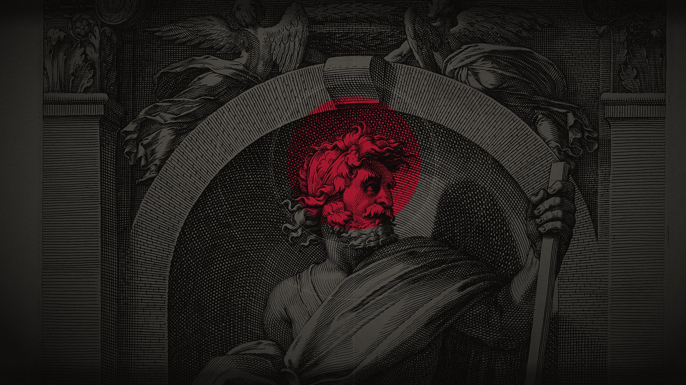

~/strixos main › strix-info ╓ ╖ larp Strix 0.1.0 Kernel :: 6.18.2 Shell :: Quickshell on Hyprland Theme :: Saturnus, dark, 4 more min Disk :: 162 GiB of 952 GiB ╙ ╜ ~/strixos main › git log --oneline -3 d207083 (HEAD → main, origin/main) ci: update flake inputs and crates every week 952d81c (tag: v0.1.0, origin/stable) release: 0.1.0 7c1e0aa feat(installer): ask for the language first ~/strixos main › cargo build Compiling theme-engine v0.1.0 error[E0308]: mismatched types --> src/check.rs:14:16 14 | return fail(4.5); | ^^^ expected `&str`, found floating-point number warning: unused variable: `text` ~/strixos main › ls hosts installer modules packages themes build.sh flake.lock flake.nix README.md ~/strixos main ›